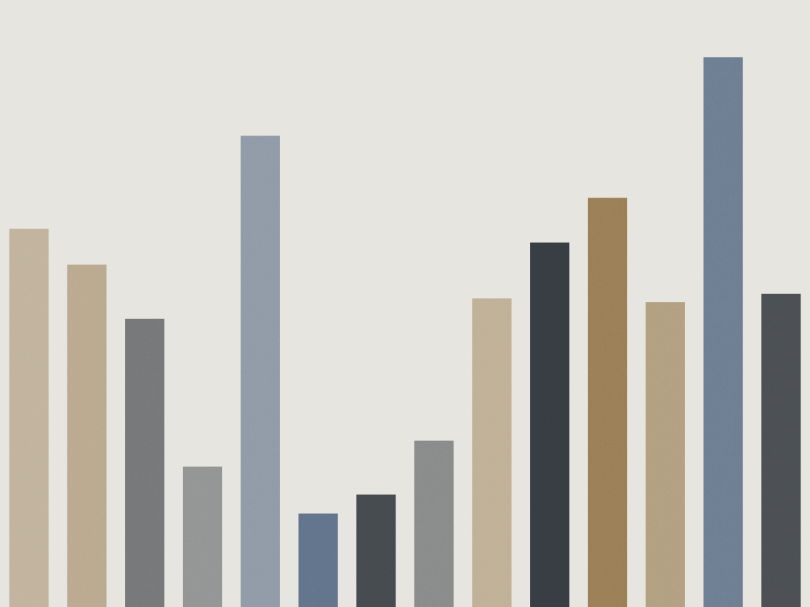

Centro · São Paulo · desde 2004
A primeira conversa serve para decidir se vale processar
Uma hora com um advogado, R$ 300, com os documentos na mesa. Você sai com a análise por escrito, o prazo de cada coisa e a estimativa de custo. Em parte dos casos, o parecer recomenda não entrar com ação — e isso também é um resultado.
Marcar consulta
O que o escritório faz
Só direito do trabalho, do lado do trabalhador. Não atendemos empresas e não pegamos casos de outra área.
- Verbas rescisórias
- Saldo de salário, aviso, férias e FGTS não recolhido. Precisa do extrato do FGTS, a carteira e o termo de rescisão.
- Acidente e doença ocupacional
- Da CAT ao laudo do INSS. Casos assim costumam levar mais tempo, e o primeiro passo é estabilizar o afastamento antes de discutir indenização.
- Assédio moral e sexual
- Testemunhas, mensagens e registro de data. É a área em que a prova costuma ser mais frágil — por isso a análise inicial é demorada.
- Horas extras e banco de horas
- Cartão de ponto, escala e acordo de banco de horas. A conta depende do intervalo e da convenção coletiva da categoria.
Três advogados, sem sócio oculto
Quem faz a consulta é quem assina a peça. O escritório não repassa caso para correspondente em outra cidade.
-
Helena Saraiva
OAB/SP 214.887 · sócia
Verbas rescisórias e horas extras. Trabalhou seis anos em vara do trabalho antes de abrir o escritório.
-
Rubens do Prado
OAB/SP 186.402 · sócio
Acidente de trabalho e doença ocupacional. Atua com perícia médica desde 2001.
-
Nina Okamoto
OAB/SP 398.115 · associada
Assédio moral e sexual. Faz a entrevista inicial com testemunhas e organiza a prova documental.
Do primeiro telefonema à sentença
-
Consulta
Uma hora, R$ 300, presencial no Centro ou por videochamada. Traga carteira de trabalho, holerites dos últimos doze meses e o termo de rescisão, se houver.
-
Parecer
Em até cinco dias úteis você recebe um documento de duas a quatro páginas: o que a lei garante, o que a prova sustenta e o que provavelmente não passa.
-
Decisão sobre honorários
Explicamos as duas formas: percentual sobre o êxito ou valor fixo por fase. Nenhuma das duas é assinada na primeira conversa.
-
Tentativa de acordo
Quando há espaço, a primeira via é a comissão de conciliação prévia. Costuma ser mais rápida e mais barata — e nem sempre é possível.
-
Ação
Distribuída a reclamação, o processo costuma levar de oito meses a dois anos na primeira instância. Não prometemos prazo menor do que a vara costuma dar.
“Saí da consulta sabendo que meu caso tinha pouca chance. Pagaria a mesma coisa por um advogado que prometesse o contrário?”
“O parecer veio com a lista de documentos que faltavam. Foi a única coisa que me fez voltar — não o preço.”
Marcar a consulta
Atendimento de segunda a sexta, das 9h às 18h. A consulta precisa de hora marcada e os documentos podem ser enviados antes por e-mail.
Não atendemos por WhatsApp para análise de caso. Dúvida sobre documentação, sim.
- Endereço
- Rua Sete de Abril, 174 — conjunto 82
República, São Paulo - Telefone
- (11) 3254-9008
- Consulta
- R$ 300 · uma hora · parecer incluso